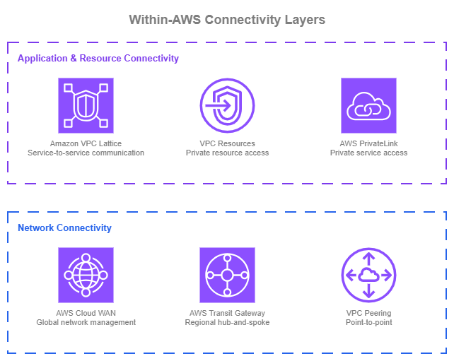
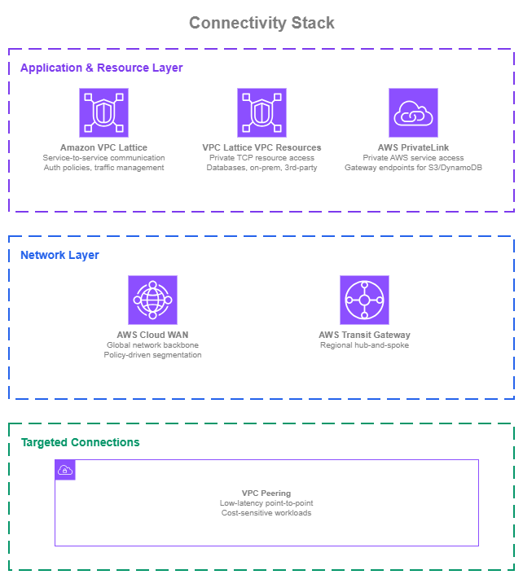

AWS 내부 연결¶
사전 요구 사항
이 섹션은 Amazon VPC, CIDR 계획, AWS Organizations에 대한 이해를 전제로 합니다. AWS 네트워킹 기초가 처음이라면 해당 항목을 먼저 검토하세요.
VPC와 서비스를 AWS 내부에서 연결하는 것은 단일 서비스만으로 결정되는 경우가 거의 없습니다. AWS는 서로 다른 계층에서 동작하는 6가지 연결 서비스를 제공합니다. 단일 선언적 정책으로 30개 이상의 리전에 걸친 글로벌 토폴로지를 관리하는 AWS Cloud WAN부터, IAM 기반 인증과 CIDR 조율 없이 HTTP/gRPC 서비스 간 통신을 처리하는 Amazon VPC Lattice, 특정 VPC 쌍 간에 동일 리전 내 무료 데이터 전송을 제공하는 VPC Peering까지 다양합니다. 성숙한 AWS 네트워크는 이러한 서비스를 동시에 조합하여 사용합니다. 각 서비스는 가장 가치를 발휘하는 계층, 즉 네트워크 수준 연결(VPC 간 트래픽 라우팅 방식), 애플리케이션 수준 서비스 통신(서비스 간 검색 및 통신 방식), 프라이빗 리소스 접근(워크로드가 데이터베이스 등 특정 네트워크 리소스에 접근하는 방식)에서 활용됩니다.

AWS 내부 연결 계층 — Drawio 소스
가장 단순한 형태로는 VPC Peering 연결로 두 VPC를 연결할 수 있습니다. 직접적이고 저렴하며 지점 간 통신에 효과적입니다. VPC와 계정 수가 증가함에 따라 AWS Transit Gateway를 활용한 허브 앤 스포크 모델이 리전 내 라우팅을 중앙화하고 관리를 단순화합니다. 일관된 세분화 정책, 자동화된 연결 운영, 중앙 집중식 거버넌스가 필요한 경우 AWS Cloud WAN이 단일 정책 기반 컨트롤 플레인으로 이를 통합합니다. 이는 단일 리전에서 운영하든 여러 리전에서 운영하든 동일하게 적용됩니다. AWS Cloud WAN의 네트워크 정책은 토폴로지를 선언적으로 정의하므로, VPC 추가, 세그먼트 격리 적용, 라우팅 관리가 개별 Transit Gateway에 대한 수동 구성이 아닌 정책 변경을 통해 이루어집니다.
애플리케이션 측면에서 AWS PrivateLink는 AWS 서비스에 대한 프라이빗 접근을 제공하고, ENI 기반 엔드포인트를 통해 자체 서비스를 다른 계정에 노출할 수 있게 합니다. 자체 워크로드 간 통신을 위해 Amazon VPC Lattice는 팀 간 네트워크 수준 조율 없이 HTTP, HTTPS, gRPC 서비스에 대한 서비스 검색, IAM 기반 액세스 제어, 트래픽 관리를 처리하는 고수준 추상화를 제공합니다. 데이터베이스, 온프레미스 엔드포인트, 서드파티 TCP 서비스 등 특정 네트워크 리소스에 대한 프라이빗 접근을 위해 VPC Lattice VPC Resources는 동일한 서비스 네트워크 모델을 TCP 리소스까지 확장합니다.
대부분의 조직은 이러한 서비스 중 둘 이상을 동시에 사용합니다. 목표는 각 서비스가 가장 큰 가치를 제공하는 곳에 활용하는 것입니다. 이러한 서비스를 결합한 권장 아키텍처는 이 페이지 하단의 연결 스택 구축을 참조하세요.
AWS Cloud WAN을 활용한 정책 기반 네트워크 관리¶
AWS Cloud WAN을 사용하면 단일 선언적 정책을 통해 네트워크를 구축, 관리, 모니터링할 수 있습니다. 리전과 계정 전반에 걸쳐 개별 Transit Gateway, 피어링 연결, 라우팅 테이블을 각각 구성하는 대신, AWS Cloud WAN은 전체 네트워크 토폴로지를 JSON 정책 문서 하나로 중앙화합니다. 네트워크 정책은 전체 토폴로지를 정의합니다. 즉, 어떤 리전이 참여하는지, 어태치먼트가 어떻게 세그먼트로 분류되어 네트워크에 자동으로 연결되는지, 세그먼트 간 트래픽이 어떻게 라우팅되는지를 모두 선언합니다. 정책 변경 사항은 버전 관리되며 변경 세트 프로세스를 통해 적용되고, 서비스가 기반 인프라의 구축 및 업데이트를 처리합니다.
주요 기능:
-
정책 기반 토폴로지
네트워크를 코드로 정의합니다. 세그먼트, 라우팅, 어태치먼트 규칙, 리전 간 연결이 모두 네트워크 정책에 선언됩니다.
-
세그먼트
어떤 VPC가 통신할 수 있는지를 제어하는 논리적 격리 경계입니다. 세그먼트 간 트래픽은 명시적인 라우팅 규칙이 필요합니다.
-
자동화된 어태치먼트 수락
어태치먼트(VPC, Direct Connect, Site-to-Site VPN, Connect, 또는 Transit Gateway 라우팅 테이블)가 어태치먼트 메타데이터(태그, 어태치먼트 유형, AWS 계정 멤버십, AWS 리전)를 기반으로 수동 승인 여부와 관계없이 올바른 세그먼트에 자동으로 연결됩니다.
-
서비스 삽입
정책에서 검사 규칙을 정의하여 세그먼트 간 트래픽을 Inspection VPC를 통해 라우팅합니다.
-
멀티 리전 및 단일 리전
AWS Cloud WAN은 여러 리전에 걸친 글로벌 네트워크와 정책 기반 관리 및 세분화가 주요 가치인 단일 리전 배포 모두에서 활용할 수 있습니다.
-
라우팅 정책
멀티 패스 환경에서의 트래픽 엔지니어링을 위한 라우트 필터링, 요약, BGP 속성 조작을 포함한 라우트 전파에 대한 세밀한 제어가 가능합니다.
-
듀얼 스택 지원
동일한 네트워크 정책에서 IPv4 및 IPv6 라우팅을 구성합니다.
-
Transit Gateway 통합
기존 Transit Gateway를 AWS Cloud WAN과 피어링하여 점진적인 도입이 가능합니다.
AWS Cloud WAN 모범 사례¶
세그먼트를 환경이 아닌 라우팅 도메인으로 이해하기¶
처음에는 "production"과 "development"라는 이름의 세그먼트를 만들고 싶은 충동이 생깁니다. 이 방식도 작동하지만, 세분화의 강점을 제한합니다. 세그먼트는 신뢰 경계를 정의하는 라우팅 도메인 또는 보안 영역으로 이해하는 것이 더 적합합니다.
예를 들어, pci 세그먼트는 카드 소지자 데이터를 처리하는 프로덕션과 스테이징 전반의 VPC를 포함하며, 해당 세그먼트에 진입하거나 나가는 트래픽에 대해 엄격한 검사 규칙을 적용할 수 있습니다. sharedservices 세그먼트는 여러 다른 세그먼트에서 제어된 접근이 필요한 DNS, 모니터링, 자격 증명 서비스를 호스팅할 수 있습니다. hybrid 세그먼트는 모든 Direct Connect 및 VPN 어태치먼트를 그룹화하고, hybrid와 다른 세그먼트 간의 트래픽이 선호하는 방화벽 솔루션을 실행하는 Inspection VPC를 통과하도록 서비스 삽입 규칙을 적용할 수 있습니다.
세그먼트를 신뢰 경계와 트래픽 흐름 패턴을 중심으로 설계하면 환경에 1:1로 매핑하는 것보다 더 많은 유연성을 얻을 수 있습니다. 환경별로 세그먼트를 가질 수도 있지만, 환경 이름을 기본값으로 사용하기보다는 실제로 필요한 라우팅 및 보안 경계가 무엇인지 고려하세요.
AWS Organizations SCP로 어태치먼트 수락 자동화하기¶
AWS Cloud WAN 어태치먼트 수락 정책은 어태치먼트의 메타데이터(주로 태그)를 기반으로 어떤 어태치먼트가 어떤 세그먼트에 연결될 수 있는지를 결정합니다. 수동 승인 없이 대규모로 이를 작동시키는 핵심은 소스에서 해당 태그를 제어하는 것입니다.
AWS Organizations Service Control Policies(SCP)를 사용하여 계정 전반의 리소스에 태깅 요구 사항을 적용하세요. 특정 OU의 계정이 필요한 태그(예: segment:production 또는 segment:sharedservices)로 VPC를 생성하면, Cloud WAN이 자동으로 어태치먼트를 올바른 세그먼트에 수락합니다. 티켓도, 네트워킹 팀의 수동 검토도 필요 없습니다.
태그 거버넌스를 위한 SCP와 자동화된 수락을 위한 어태치먼트 정책의 조합은 어떤 트래픽이 어떤 세그먼트에 위치하는지에 대한 제어를 유지하면서 네트워킹 팀이 어태치먼트 온보딩의 병목이 되지 않도록 합니다.
민첩한 보안 적용을 위한 서비스 삽입 활용하기¶
AWS Cloud WAN의 서비스 삽입 기능을 사용하면 AWS Network Firewall 또는 서드파티 어플라이언스를 실행하는 Inspection VPC를 통해 세그먼트 내부 또는 세그먼트 간 트래픽을 라우팅할 수 있습니다. 검사 규칙은 네트워크 정책에 정의되므로, 어떤 트래픽을 검사할지 변경하거나 다른 Inspection VPC를 통해 라우팅하는 것이 여러 Transit Gateway에 걸친 수동 라우팅 업데이트가 아닌 정책 변경으로 처리됩니다.
이것이 중요한 이유는 보안 및 검사 요구 사항이 변하기 때문입니다. 새로운 컴플라이언스 요구 사항으로 인해 이전에 직접 통신하던 두 세그먼트 간의 트래픽 검사가 의무화될 수 있으며, 다른 보안 메커니즘으로 보호되는 환경에서는 검사를 제거하는 비용 최적화 전략을 적용할 수도 있습니다. 서비스 삽입을 사용하면 이는 영향을 받는 모든 리전과 세그먼트에 적용되는 정책 업데이트로 처리됩니다.
라우팅 정책으로 라우트 전파 및 트래픽 경로 제어하기¶
AWS Cloud WAN 라우팅 정책은 네트워크 전반에 걸쳐 어떤 라우트가 전파되는지, 멀티 패스 환경에서 트래픽이 어떻게 흐르는지에 대한 세밀한 제어를 제공합니다. 라우팅 정책은 어태치먼트, 세그먼트 공유, 또는 코어 네트워크 엣지 수준에서 라우트 전파에 적용되는 일치 조건과 작업이 포함된 규칙 집합입니다.
라우트 필터링 및 요약: 대규모 네트워크에서는 모든 어태치먼트가 모든 라우트를 볼 필요가 없습니다. 라우팅 정책을 사용하면 세그먼트 간 또는 Cloud WAN과 외부 네트워크(Direct Connect, VPN) 간에 전파되는 프리픽스를 필터링할 수 있습니다. 또한 라우팅 테이블 크기를 줄이고 잘못된 구성의 영향 범위를 제한하기 위해 라우트를 요약할 수 있습니다. 예를 들어, 개별 VPC CIDR을 온프레미스 네트워크에 전파하는 대신 전체 세그먼트를 포괄하는 단일 요약 라우트를 광고할 수 있습니다.
멀티 패스 환경을 위한 BGP 속성 조작: 온프레미스로의 연결 경로가 여러 개인 경우(예: 두 리전의 Direct Connect와 VPN 백업), 라우팅 정책을 사용하면 BGP 속성(AS 경로 프리펜딩, MED, 로컬 프리퍼런스)을 조작하여 트래픽이 어떤 경로를 사용할지 제어할 수 있습니다. 이는 대역폭 가용성, 지연 시간, 비용을 기반으로 성능을 최적화하고, 서드파티 라우팅 어플라이언스에 의존하지 않고 액티브/스탠바이 장애 조치 패턴을 구축하는 데 필수적입니다.
리전별 인터넷 이그레스 제어: 특정 리전의 Inspection VPC를 통해 아웃바운드 인터넷 트래픽을 중앙화하는 조직은 라우팅 정책을 사용하여 기본 라우트를 적절히 지정할 수 있습니다. 예를 들어, 아시아 태평양 리전의 트래픽은 싱가포르의 Inspection VPC를 통해 라우팅되고, 유럽 트래픽은 프랑크푸르트를 통해 라우팅됩니다.
라우팅 정책은 또한 BGP 속성과 함께 학습 및 광고된 라우트를 보여주는 라우팅 데이터베이스에 대한 향상된 가시성을 제공합니다. 이 가시성은 복잡한 멀티 패스 환경에서의 문제 해결에 매우 중요합니다.
처음부터 IPv6 계획하기¶
AWS Cloud WAN은 듀얼 스택 라우팅을 지원합니다. 오늘날 모든 워크로드가 IPv6를 사용하지 않더라도 처음부터 네트워크 정책에 IPv4와 함께 IPv6를 구성하세요. 기존 네트워크 정책에 IPv6를 나중에 추가하는 것은 처음부터 포함하는 것보다 더 많은 혼란을 야기하며, AWS 서비스 전반에 걸쳐 IPv6 도입이 가속화되고 있습니다.
네트워크 정책을 코드로 관리하기¶
AWS Cloud WAN 콘솔은 정책 버전 관리와 변경 세트를 제공하며, 이는 좋은 출발점입니다. 프로덕션 네트워크의 경우 한 단계 더 나아가세요. 네트워크 정책 문서를 Git 저장소에 저장하고, 제안된 변경 사항에 풀 리퀘스트를 사용하며, 적용 전에 유효성 검사를 실행하세요. 변경 사항이 승인되고 적용되면 AWS Cloud WAN이 글로벌 네트워크를 구축하므로, 검토 프로세스가 제어 게이트 역할을 합니다.
이 접근 방식은 감사 추적, 동료 검토, 버전 제어를 통한 롤백 기능, 그리고 프로덕션에 적용하기 전에 비프로덕션 네트워크에서 정책 변경을 테스트하는 능력을 제공합니다. 또한 정책 자체가 문서이기 때문에 네트워크 토폴로지가 그 자체로 문서화된다는 것을 의미합니다.
AWS Cloud WAN 사용 시기¶
AWS Cloud WAN은 AWS에서 새로운 멀티 계정 네트워크를 구축할 때 자연스럽게 적합합니다. 네트워크 정책이 전체 토폴로지를 선언적으로 정의하므로, 성장에 따라 개별 Transit Gateway와 피어링 연결을 연결하는 운영 오버헤드를 피할 수 있습니다. 이는 하나의 리전에서 시작하든 여러 리전에서 시작하든 동일하게 적용됩니다.
Transit Gateway가 있는 기존 환경의 경우, 다음과 같은 상황에서 AWS Cloud WAN으로의 전환을 고려하세요.
- 네트워크 전반에 일관되게 적용되는 중앙화된 세분화 정책이 필요하고, 개별 Transit Gateway 라우팅 테이블 관리가 오류가 발생하기 쉬워진 경우.
- 조직이 수십 또는 수백 개의 계정으로 확장되고 수동 라우트 관리가 팀의 속도를 저하시키는 경우.
- 네트워킹 팀이 어태치먼트 온보딩의 병목이 되지 않도록 정책 기반 어태치먼트 수락을 원하는 경우.
- 여러 리전에서 Transit Gateway를 운영하고 리전 간 라우팅 관리가 복잡해진 경우.
Transit Gateway에서 마이그레이션하기¶
AWS Cloud WAN은 Transit Gateway 피어링 어태치먼트를 통해 기존 Transit Gateway 배포와 직접 통합됩니다. 이를 통해 점진적인 마이그레이션이 가능합니다.
- 기존 Transit Gateway와 함께 AWS Cloud WAN 코어 네트워크를 생성합니다.
- Transit Gateway를 코어 네트워크 어태치먼트로 AWS Cloud WAN에 피어링합니다. 피어링 어태치먼트를 통해 TGW 라우팅 테이블 어태치먼트를 사용하여 Transit Gateway 라우팅 테이블을 세그먼트로 확장함으로써 세분화를 생성할 수 있습니다.
- 네트워크에 검사가 필요한 경우, Inspection VPC를 복제하는 것을 권장합니다. 현재 것은 Transit Gateway에 연결하고, 새 것은 AWS Cloud WAN에 연결합니다(동일한 방화벽 솔루션을 가리킴). 서비스 삽입 규칙이 적용되면, 로컬 Transit Gateway 트래픽은 Transit Gateway에 연결된 Inspection VPC에 유지되고, 다른 트래픽은 새 Inspection VPC를 통과합니다.
- VPC 어태치먼트를 Transit Gateway에서 AWS Cloud WAN으로 점진적으로 이동합니다. 코어 네트워크 어태치먼트를 생성하고, 트래픽을 새 코어 네트워크 어태치먼트로 전환한 후, 트래픽을 검증하면 Transit Gateway 어태치먼트를 제거할 수 있습니다.
- Transit Gateway가 비워지면 해제합니다.
이 접근 방식은 한 번에 이루어지는 파괴적인 마이그레이션을 피하고, 중요하지 않은 워크로드로 먼저 새 네트워크 동작을 검증할 수 있게 합니다. 작동 중인 Transit Gateway 설정에서 마이그레이션할 긴급성은 없습니다. AWS Cloud WAN은 기존 Transit Gateway와 피어링되므로, 자신의 속도에 맞게 도입할 수 있습니다.
AWS Cloud WAN과 다른 네트워킹 서비스 결합하기¶
| 조합 | AWS Cloud WAN 담당 | 다른 서비스 담당 |
|---|---|---|
| AWS Cloud WAN + VPC Lattice | 네트워크 백본 및 세분화 | IAM 기반 인증 정책을 사용한 서비스 간(HTTP/HTTPS/gRPC) 통신 |
| AWS Cloud WAN + VPC Resources | 네트워크 백본 및 세분화 | 소비자와 공급자 VPC 간의 네트워크 수준 라우팅 없이 특정 리소스(데이터베이스, 온프레미스 엔드포인트)에 대한 프라이빗 TCP 접근 |
| AWS Cloud WAN + PrivateLink | VPC 간 라우팅 | AWS 서비스에 대한 프라이빗 접근(게이트웨이/인터페이스 엔드포인트) |
| AWS Cloud WAN + Transit Gateway | 글로벌 정책 기반 네트워크(마이그레이션 중에는 두 서비스가 나란히 실행됨) | 아직 마이그레이션되지 않은 VPC를 위한 리전별 허브 앤 스포크 라우팅 |
| AWS Cloud WAN + VPC Peering | 기본 네트워크 백본 | 특정 VPC 쌍을 위한 직접적인 저지연, 고처리량 연결(예: 데이터베이스 복제) |
문서¶
-
AWS Cloud WAN 문서
네트워크 정책, 세그먼트, 어태치먼트, 서비스 삽입, 라우팅 정책 및 요금을 포함한 전체 서비스 문서입니다.
-
AWS Cloud WAN 블루프린트
일반적인 AWS Cloud WAN 배포 패턴을 위한 참조 아키텍처 및 IaC 템플릿입니다.
-
AWS Cloud WAN 워크숍
AWS Cloud WAN 네트워크를 구축하고 구성하는 실습 워크숍입니다.
-
AWS Cloud WAN 블로그 게시물
AWS Networking & Content Delivery 블로그의 아키텍처 안내, 기능 발표 및 구현 가이드입니다.
-
고객 성공 사례
조직이 AWS Cloud WAN을 사용하여 글로벌 네트워크를 단순화하고 확장하는 방법입니다.
Amazon VPC Lattice를 활용한 애플리케이션 계층 서비스 통신¶
Amazon VPC Lattice는 애플리케이션 계층에서 동작하며, 기반 네트워크 구성을 직접 관리하지 않아도 서비스 간 통신을 처리합니다. VPC Lattice는 VPC 경계를 추상화하여, 관리형 애플리케이션 네트워킹 계층을 통해 VPC와 계정 전반에 걸쳐 서비스가 통신할 수 있도록 합니다. 이는 네트워크 토폴로지와 독립적으로 동작합니다.
이 섹션은 VPC Lattice 서비스, 즉 팀이 구축하고 서로에게 노출하는 HTTP, HTTPS, gRPC 워크로드에 초점을 맞춥니다. 데이터베이스, 온프레미스 엔드포인트, 서드파티 TCP 서비스와 같은 네트워크 리소스에 대한 프라이빗 액세스는 이어지는 VPC 리소스 섹션을 참조하세요. 두 기능 모두 VPC Lattice의 일부이며 동일한 서비스 네트워크 구성을 공유하므로, 필요에 따라 함께 사용할 수 있습니다.
주요 기능:
-
서비스 네트워크
연결된 서비스와 VPC 간의 통신을 가능하게 하는 논리적 그룹입니다. 서비스 네트워크 내의 애플리케이션은 서로를 검색하고 통신할 수 있습니다.
-
IAM 인증 정책
서비스 수준의 자격 증명 기반 액세스 제어입니다. 네트워크 토폴로지에 관계없이 어떤 주체(IAM 역할, 계정, 조직)가 어떤 서비스를 호출할 수 있는지 정의합니다.
-
트래픽 관리
카나리 배포, 블루/그린 릴리스, 컴퓨팅 유형(EC2, ECS, EKS, Lambda, ALB) 간 점진적 마이그레이션을 위한 대상 그룹 간 가중치 기반 라우팅입니다.
-
교차 계정 공유
AWS RAM을 통해 특정 계정 또는 전체 조직과 VPC Lattice 서비스 네트워크 또는 서비스를 공유합니다. 계정 간 CIDR 조율이 필요하지 않습니다.
-
HTTP, HTTPS, gRPC
HTTP, HTTPS, gRPC 서비스를 위한 리스너입니다. 서비스는 프로토콜, 포트, 라우팅 규칙을 정의하고 VPC Lattice가 연결을 처리합니다. 데이터베이스와 같은 TCP 전용 워크로드에는 VPC 리소스를 사용하세요.
-
듀얼 스택 지원
서비스 및 대상 그룹에 대한 IPv4, IPv6, 듀얼 스택 구성을 지원합니다.
VPC Lattice가 네트워크 연결을 보완하는 방식¶
VPC Lattice는 AWS Cloud WAN이나 Transit Gateway를 대체하지 않습니다. 서로 다른 계층에서 동작합니다. 네트워크 연결은 VPC 간 IP 수준 라우팅을 담당하고, VPC Lattice는 기존 네트워크 연결과 병행하여, 또는 네트워크 연결 없이도 애플리케이션 수준의 서비스 통신을 처리합니다.
VPC Lattice를 사용하면 서로 다른 VPC의 서비스가 해당 VPC 간 네트워크 수준 연결 없이도 통신할 수 있습니다. VPC Lattice는 데이터 플레인을 투명하게 관리합니다. 이를 통해 서비스 통신 아키텍처를 네트워크 토폴로지로부터 분리할 수 있습니다.
VPC Lattice 모범 사례¶
각 소비자 VPC를 단일 서비스 네트워크에 연결¶
VPC는 서비스 네트워크 VPC 연결을 통해 한 번에 하나의 서비스 네트워크와 연결할 수 있으며, 이를 통해 VPC Lattice 데이터 플레인이 소비자 VPC 내부에 직접 배치됩니다. 이것이 VPC에 권장되는 소비 모델입니다. 해당 VPC가 VPC Lattice를 통해 소비하는 모든 것에 대한 단일하고 명확한 진입점을 제공합니다.
대안인 서비스 네트워크 VPC 엔드포인트를 사용하여 동일한 VPC에서 추가 서비스 네트워크에 접근하는 방식은 소비 모델을 분산시킵니다. 동일한 VPC의 서로 다른 서비스가 서로 다른 구성을 통해 VPC Lattice에 접근하게 되어, 액세스 로그 상관 관계 파악이 어려워지고, 보안 그룹 및 인증 정책 추론이 복잡해지며, 문제 해결이 느려집니다. 단일 연결 모델은 해당 VPC에서 VPC Lattice로 향하는 모든 요청이 한 곳을 통해 흐르도록 하여, 관측성(일관된 액세스 로그 세트), 인증 정책 귀속(하나의 서비스 네트워크 정책 적용), 그리고 Day-2 운영을 단순화합니다.
특별한 이유가 없는 한 이를 기본값으로 유지하세요. 예외적인 경우도 존재합니다. 예를 들어, 평소에는 소비하지 않는 서비스 네트워크에 단기적으로 접근이 필요한 공유 툴링 VPC가 그 예입니다. 이러한 경우는 패턴이 아닌 예외로 취급하세요.
환경이나 소비자가 아닌 비즈니스 도메인 중심으로 서비스 네트워크 구성¶
소비자 VPC가 단일 서비스 네트워크와 연결하는 것이 권장 사항이므로, 서비스 네트워크를 어떻게 구분하느냐가 각 소비자가 보는 것을 직접적으로 결정합니다. 관련 기능을 production이나 staging 같은 환경 이름이나 계정, VPC 같은 인프라 경계가 아닌 비즈니스 도메인(예: payments, inventory, identity)에 맞춰 서비스 네트워크로 그룹화하세요.
핵심적인 유연성: VPC Lattice 서비스 또는 리소스 구성은 둘 이상의 서비스 네트워크와 연결될 수 있습니다. 서로 다른 소비자 그룹에 노출하기 위해 서비스를 복제할 필요가 없으며, 일부 소비자가 두 도메인 모두 필요하다는 이유만으로 관련 없는 도메인을 하나의 서비스 네트워크로 통합할 필요도 없습니다. 각 서비스 또는 리소스를 한 번 게시한 후, 해당 서비스에 접근해야 하는 소비자 그룹을 나타내는 서비스 네트워크에 연결하세요.
피해야 할 두 가지 안티패턴:
- 모든 것을 위한 단일 조직 전체 서비스 네트워크. 모든 서비스와 리소스가 하나의 인증 정책, 하나의 액세스 로그 세트, 하나의 장애 도메인 뒤에 놓이게 됩니다. 소유권이 불분명해지고 잘못된 구성의 영향 범위가 넓어집니다.
- 소비자 VPC별 또는 소비 애플리케이션별 서비스 네트워크. 이는 연결 모델을 역전시킵니다. 모든 공급자가 소비자별로 전용 서비스 네트워크를 게시하면, 소비자는 여러 공급자에 동시에 접근할 수 없습니다. 예외는 서비스 네트워크가 소비자 자신의 계정에 있는 경우로, 여러 공급자로부터 공유된 리소스를 소비자가 소유하는 단일 연결 뒤에 집계하는 경우입니다.
처음부터 인증 정책 활성화¶
VPC Lattice 인증 정책은 서비스 수준에서 IAM 기반 액세스 제어를 제공합니다. 어떤 VPC가 어떤 VPC와 통신할 수 있는지 제어하기 위해 보안 그룹과 NACL을 관리하는 대신, 네트워크 위치에 관계없이 어떤 주체(IAM 역할, 계정, 조직)가 어떤 서비스를 호출할 수 있는지 지정하는 정책을 정의합니다.
완전한 제로 트러스트 보안 태세를 위해서는 소비자 애플리케이션이 AWS SigV4(또는 SigV4A)로 요청에 서명해야 하며, 이를 기존 코드베이스 전반에 걸쳐 적용하는 데는 시간이 필요합니다. 기다릴 필요는 없습니다. 인증 정책은 주체 자격 증명과 함께 요청 속성(소스 VPC, HTTP 메서드, 경로, 헤더)에 대한 조건을 지원하므로, 요청이 이미 전달하는 정보를 사용하여 첫날부터 정책을 활성화한 후, 소비자가 서명을 도입함에 따라 주체 기반 조건으로 강화할 수 있습니다. 이를 통해 애플리케이션 변경을 기다리지 않고도 즉시 액세스 로그, 명시적 허용/거부 결정, 그리고 작동하는 컨트롤 플레인을 확보할 수 있습니다.
정책 없이 배포된 서비스에 인증 정책을 나중에 추가하는 것은 처음부터 허용적인 정책으로 시작하는 것보다 어렵습니다. 소비자가 이미 개방된 액세스에 의존하고 있을 수 있으며, 나중에 제한을 추가하려면 모든 소비 팀과 조율이 필요합니다.
안전한 배포를 위한 가중치 기반 라우팅 활용¶
VPC Lattice 서비스는 대상 그룹에 대한 가중치 기반 라우팅을 지원하여, 서비스 버전 간 또는 컴퓨팅 유형 간에 트래픽을 점진적으로 전환할 수 있습니다. 이는 다음과 같은 경우에 유용합니다:
- 카나리 배포: 트래픽의 5%를 새 버전으로 보내고, 모니터링한 후 점진적으로 늘립니다.
- 컴퓨팅 마이그레이션: 한 번에 전환하지 않고 EC2에서 ECS 또는 Lambda로 트래픽을 점진적으로 이동합니다.
- 인플레이스 업그레이드: 이전 버전과 새 버전을 나란히 실행하면서 신뢰도가 높아짐에 따라 트래픽을 전환합니다.
가중치 기반 라우팅은 대상 유형 전반에 걸쳐 작동하므로, 동일한 서비스 내에서 EC2 인스턴스, ECS 태스크, EKS 파드, Lambda 함수의 혼합으로 라우팅할 수 있습니다.
처음부터 멀티 계정을 고려한 서비스 네트워크 설계¶
개별 계정이 아닌 조직 단위(OU) 수준에서 AWS RAM을 통해 서비스 네트워크를 공유하세요. 이렇게 하면 OU에 새 계정이 추가될 때 자동으로 확장됩니다. 서비스 소유자는 자신의 서비스와 인증 정책에 대한 제어권을 유지하고, 소비 계정은 공유된 서비스 네트워크에 VPC를 연결합니다.
이 모델을 통해 플랫폼 팀은 조직 전반의 애플리케이션 팀이 네트워크 수준 조율 없이 소비할 수 있는 공유 서비스 네트워크를 생성할 수 있습니다.
가시성을 위한 액세스 로그 활성화¶
서비스 네트워크에서 S3, CloudWatch Logs, 또는 Kinesis Data Firehose로의 액세스 로깅을 구성하세요. 액세스 로그는 소스 및 대상 자격 증명, 지연 시간, 응답 코드, 인증 정책 결정을 포함하여 VPC Lattice를 통해 흐르는 모든 요청을 캡처합니다. 이 가시성은 문제 해결, 보안 감사, 서비스 간 트래픽 패턴 파악에 필수적입니다.
처음부터 IPv6 계획¶
VPC Lattice는 IPv4, IPv6, 듀얼 스택 구성을 지원합니다. 서비스 요구 사항에 따라 구성하되, 나중에 추가하는 번거로움을 피하기 위해 처음부터 IPv6를 포함하세요.
Amazon VPC Lattice 사용 시기¶
VPC Lattice는 새로운 환경을 구축하든 기존 네트워크에 서비스를 추가하든 관계없이, HTTP, HTTPS, gRPC를 통한 모든 새로운 서비스 간 통신 패턴에 적합합니다. 네트워크 토폴로지와 독립적으로 동작하므로, VPC Lattice를 도입해도 기존 IP 기반 네트워크 설정을 변경할 필요가 없습니다.
다음과 같은 경우 서비스에 VPC Lattice를 고려하세요:
- 애플리케이션 팀이 네트워크 변경 요청 없이 VPC 및 계정 경계를 넘어 HTTP/HTTPS/gRPC 서비스를 노출하거나 소비해야 하는 경우.
- 연결별 보안 그룹 및 NACL 관리 대신 서비스 통신에 자격 증명 기반 액세스 제어(IAM 인증 정책)를 원하는 경우.
- 혼합 컴퓨팅(EC2, ECS, EKS, Lambda)을 운영하며 대상 유형 전반에 걸쳐 트래픽을 라우팅하는 통합된 방법이 필요한 경우.
- 추가 로드 밸런서를 배포하지 않고 내장 트래픽 관리(가중치 기반 라우팅, 상태 확인)를 원하는 경우.
TCP 전용 워크로드(데이터베이스, 메시지 브로커, 레거시 프로토콜, 온프레미스 리소스)에는 VPC 리소스를 사용하세요. 두 기능 모두 동일한 서비스 네트워크에 공존할 수 있습니다.
기존 연결 패턴에서 서비스 온보딩¶
현재 서비스가 PrivateLink 엔드포인트 서비스, 내부 로드 밸런서, 또는 직접 IP 기반 연결을 통해 통신하는 경우, 기존 트래픽을 중단하지 않고 점진적으로 VPC Lattice로 온보딩할 수 있습니다.
PrivateLink 엔드포인트 서비스에서 마이그레이션: 동일한 백엔드 대상으로 VPC Lattice에 서비스를 생성하거나(또는 기존 NLB를 IP 대상 그룹으로 지정), 소비자가 PrivateLink 엔드포인트 DNS 대신 VPC Lattice 서비스 DNS 이름을 사용하도록 업데이트합니다. 전환 기간 동안 두 가지를 병행 운영할 수 있습니다. 모든 소비자가 마이그레이션을 완료하면 PrivateLink 엔드포인트 서비스를 폐기합니다.
IP 라우팅 가능 연결에서 마이그레이션(AWS Cloud WAN / Transit Gateway / VPC 피어링을 통한 내부 ALB/NLB 또는 직접 IP): 현재 내부 ALB/NLB 앞에 있거나 인스턴스 IP로 직접 접근하는 라우팅 가능한 IP 경로를 통해 접근하는 서비스는 기반 네트워크 연결을 변경하지 않고 VPC Lattice로 이동할 수 있습니다. 기존 대상을 VPC Lattice 대상 그룹으로 등록하세요. 내부 ALB는 ALB 대상으로, 내부 NLB는 IP 대상 그룹으로, 또는 컴퓨팅 자체(EC2, ECS, EKS, Lambda)를 네이티브 대상으로 등록합니다. 소비자는 기존 DNS 이름이나 IP 주소에서 VPC Lattice 서비스 DNS 이름으로 전환합니다. 현재 IP 기반 네트워크는 다른 트래픽을 위해 그대로 유지할 수 있으며, 시간이 지남에 따라 로드 밸런서 지원 대상에서 컴퓨팅 네이티브 대상으로 마이그레이션하여 로드 밸런서를 완전히 제거할 수 있습니다. 그 대가로 시작한 백엔드에 더해 VPC Lattice 인증 정책, 액세스 로그, 교차 계정 공유를 확보할 수 있습니다.
모든 경우에 VPC Lattice의 가중치 기반 라우팅이 전환을 더 안전하게 만들어 줍니다. 트래픽의 일부를 VPC Lattice 경로로 전환하고, 동작을 검증한 후, 마이그레이션이 완료될 때까지 점진적으로 늘릴 수 있습니다.
VPC Lattice와 다른 네트워킹 서비스의 조합¶
| 조합 | VPC Lattice 담당 | 다른 서비스 담당 |
|---|---|---|
| VPC Lattice + VPC 리소스 | 인증 정책 및 트래픽 관리를 포함한 서비스 간 통신(HTTP/HTTPS/gRPC) | 동일한 서비스 네트워크를 공유하는 리소스(데이터베이스, 온프레미스 엔드포인트)에 대한 프라이빗 TCP 액세스 |
| VPC Lattice + AWS Cloud WAN | 애플리케이션 계층에서의 서비스 검색, 인증 정책, 트래픽 관리 | 네트워크 백본, 세분화, 글로벌 라우팅 |
| VPC Lattice + Transit Gateway | 서비스 통신을 위한 애플리케이션 계층 기능(인증, 가중치 기반 라우팅, 액세스 로그) | VPC 간 IP 수준 라우팅 |
| VPC Lattice + 인터페이스 VPC 엔드포인트 | 자체 워크로드와 서드파티 간의 서비스 간 통신 | AWS 서비스 및 서드파티에 대한 프라이빗 액세스(아직 VPC Lattice에 온보딩되지 않은 경우) |
문서¶
-
Amazon VPC Lattice 문서
서비스 네트워크, 인증 정책, 대상 그룹, 리스너, 액세스 로그를 포함한 전체 서비스 문서입니다.
-
Amazon VPC Lattice 블루프린트
일반적인 VPC Lattice 배포 패턴을 위한 참조 아키텍처 및 IaC 템플릿입니다.
-
Amazon VPC Lattice 워크숍
VPC Lattice 서비스 네트워크를 구축하고 구성하는 실습 워크숍입니다.
-
Amazon VPC Lattice 블로그 게시물
AWS Networking & Content Delivery 블로그의 아키텍처 패턴, 기능 발표, 구현 가이드입니다.
-
고객 성공 사례
조직이 VPC Lattice를 활용하여 서비스 간 연결을 단순화하는 방법입니다.
VPC Lattice VPC Resources를 활용한 프라이빗 리소스 접근¶
VPC Lattice VPC Resources는 VPC Lattice를 네트워크 수준 리소스까지 확장합니다. VPC Lattice 서비스가 HTTP, HTTPS, gRPC 워크로드를 구축하고 노출하는 데 사용된다면, VPC Resources는 TCP 리소스(데이터베이스, 온프레미스 엔드포인트, IP 또는 DNS 이름으로 접근 가능한 서드파티 서비스)를 VPC 및 계정 전반에 걸쳐 프라이빗하게 소비할 수 있도록 확장 가능한 방식으로 노출합니다. 소비자는 VPC 피어링, Transit Gateway, AWS Cloud WAN 연결, 또는 소비자와 공급자 네트워크 간의 비중복 CIDR 없이도 공급자 VPC의 리소스 게이트웨이를 통해 해당 리소스에 접근할 수 있습니다.
VPC Resources는 흔히 겪는 문제를 해결합니다. 관리형 데이터베이스, 레거시 온프레미스 시스템, 또는 서드파티 SaaS 엔드포인트를 여러 소비자 VPC 및 계정에 노출하려면 기존에는 PrivateLink 엔드포인트 서비스(리소스 앞에 NLB 배치)나 Transit Gateway 또는 피어링을 통한 전체 네트워크 수준 라우팅이 필요했습니다. 리소스 구성(Resource Configuration)은 이를 단일 구성 요소로 통합하며, VPC Lattice 서비스와 함께 AWS RAM을 통해 공유할 수 있습니다.
주요 기능:
-
리소스 구성(Resource configurations)
IP 주소, 도메인 이름, 또는 ARN(예: RDS DB 인스턴스)으로 리소스(또는 리소스 그룹)를 표현합니다. 소비자는 실제 IP가 아닌 사용자가 지정한 커스텀 도메인 이름으로 리소스에 접근합니다.
-
리소스 게이트웨이(Resource gateway)
공급자 VPC 내에서 여러 가용 영역에 걸쳐 배포되는 ENI 기반 수신 지점입니다. 모든 소비자 트래픽이 리소스 게이트웨이에 도달하며, 로컬 트래픽처럼 백엔드 리소스로 전달됩니다. VPC Lattice가 트래픽을 VPC로 넘기는 경계 역할을 합니다.
-
서비스 네트워크 또는 직접 접근
리소스 구성을 서비스 네트워크에 연결(대규모 환경에서 권장하는 패턴)하거나, 서비스 네트워크 없이 소비자별 직접 접근을 위한 독립형 리소스 VPC 엔드포인트를 통해 노출할 수 있습니다.
-
RAM을 통한 교차 계정 공유
리소스 구성과 서비스 네트워크는 AWS Resource Access Manager를 통해 공유되므로, 공급자 팀은 게시할 항목을 제어하고 소비자 팀은 자신의 일정에 맞춰 VPC를 연결할 수 있습니다. CIDR 조율이 필요하지 않습니다.
-
단방향 TCP 접근
소비자가 리소스에 연결을 시작하고 동일한 연결로 응답을 받습니다. 공급자는 소비자 VPC로 새로운 연결을 시작할 수 없습니다.
-
중복 CIDR 지원
트래픽이 리소스 게이트웨이의 IP를 통해 NAT 처리되므로, 소비자와 공급자 VPC는 중복되는 CIDR 블록을 가질 수 있습니다. 이는 피어링/Transit Gateway/AWS Cloud WAN 대비 큰 운영상의 이점입니다.
-
온프레미스 및 서드파티 지원
리소스 구성은 Direct Connect 또는 VPN을 통해 접근 가능한 온프레미스 리소스와 서드파티 SaaS 엔드포인트를 포함하여, 공급자 VPC에서 접근 가능한 IP 주소 또는 DNS 이름을 가리킬 수 있습니다.
-
듀얼 스택 지원
리소스 게이트웨이는 IPv4, IPv6, 또는 듀얼 스택 주소 지정을 지원하므로, 소비자는 워크로드에서 사용하는 IP 패밀리로 리소스에 접근할 수 있습니다.
VPC Resources가 네트워크 연결을 보완하는 방식¶
VPC Lattice 서비스와 마찬가지로, VPC Resources는 네트워크 토폴로지와 독립적으로 동작합니다. 네트워크 연결은 일반 트래픽을 위한 VPC 간 IP 수준 라우팅을 담당합니다. VPC Resources는 기존 네트워크 연결 위에서, 또는 네트워크 수준 연결 없이도 특정 리소스에 대한 타겟화된 프라이빗 접근을 처리합니다.
이는 두 가지 일반적인 상황에서 특히 유용합니다:
- 중복 CIDR: 소비자와 공급자 VPC가 동일한 CIDR 블록을 가질 수 있습니다. 리소스 게이트웨이가 트래픽을 NAT 처리하므로 소비자는 공급자 측 IP를 볼 수 없습니다. 피어링과 Transit Gateway는 모두 비중복 CIDR을 요구하지만, VPC Resources는 그렇지 않습니다.
- 최소 권한 노출: 두 네트워크 전체를 연결하는 것이 아니라 정확히 하나의 데이터베이스 또는 하나의 엔드포인트만 노출하고자 할 때 유용합니다. 리소스 구성은 단일하고 명시적인 진입점으로, 전체 CIDR 범위를 연결하는 라우팅 테이블보다 이해하기 쉽습니다.
VPC Resources 모범 사례¶
규모 확장을 위해 서비스 네트워크 연결 방식을 선호하세요¶
리소스 구성을 소비자에게 노출하는 방법은 두 가지입니다: 독립형 리소스 VPC 엔드포인트(소비자별 직접 접근)와 서비스 네트워크 연결(소비자가 해당 네트워크의 서비스와 함께 서비스 네트워크를 통해 리소스에 접근)입니다.
소비자 VPC가 소수를 넘어서는 경우, 서비스 네트워크 방식이 권장 패턴입니다. 소비자는 서비스 네트워크에 VPC를 한 번 연결하면 공급자가 해당 서비스 네트워크에 게시한 모든 리소스(및 서비스)에 접근할 수 있습니다. 공급자 팀은 서비스 네트워크를 업데이트하여 리소스를 추가하거나 제거할 수 있으며, 각 소비자가 엔드포인트를 재구성할 필요가 없습니다.
독립형 리소스 엔드포인트는 타겟화되고 단기적이거나 엄격하게 제한된 소비자 시나리오에 사용하세요. 예를 들어, 더 넓은 서비스 네트워크에 포함시키지 않고 단일 애플리케이션 VPC에 특정 리소스에 대한 임시 액세스 권한을 부여하는 경우입니다.
관련 서비스와 함께 리소스 구성을 구성하세요¶
비즈니스 도메인(예: payments)에 이미 HTTP/HTTPS 서비스가 포함된 서비스 네트워크가 있다면, 해당 도메인이 의존하는 데이터베이스 및 기타 TCP 리소스를 동일한 서비스 네트워크에 등록하세요. 소비자는 VPC를 한 번 연결하면 단일 연결을 통해 도메인의 서비스(VPC Lattice 리스너를 통해)와 기반 리소스(리소스 구성을 통해) 모두에 접근할 수 있습니다.
동일한 도메인에 대해 서비스용 서비스 네트워크와 병렬로 별도의 "리소스 전용" 서비스 네트워크를 만드는 것은 피하세요. 서비스 네트워크는 공유 및 인증의 단위입니다. 서비스와 리소스를 함께 유지하면 소비자가 연결할 대상이 하나이고 추론할 인증 정책도 하나가 됩니다.
연결 볼륨에 맞게 리소스 게이트웨이 크기를 조정하세요¶
리소스 게이트웨이는 소비자 트래픽을 백엔드 리소스로 NAT 처리합니다. 게이트웨이의 각 IPv4 주소는 대상 IP당 최대 약 55,000개의 동시 연결을 지원하며, 각 ENI에는 여러 IPv4 주소가 할당됩니다(기본값 16개, 구성 가능). 고동시성 워크로드(바쁜 데이터베이스, 장기 TCP 세션)의 경우, 게이트웨이 용량이 예상 동시 연결 수와 일치하는지 확인하고, 리소스가 지원하는 만큼 많은 가용 영역에 게이트웨이를 배포하세요.
부하 상태에서 발견하기보다는 사전에 계획하세요. 리소스 게이트웨이의 IPv4 주소 할당은 생성 시점에 설정됩니다.
안정적인 소비자 계약을 위해 커스텀 도메인 이름을 사용하세요¶
리소스 구성을 생성할 때 소비자가 사용할 커스텀 도메인 이름을 지정하세요(예: payments-db.internal.example.com). 이 이름은 기반 IP 또는 리소스 ARN과 분리되어 있으므로, 공급자는 소비자가 구성을 업데이트하지 않아도 백엔드 리소스를 변경(장애 조치, 마이그레이션, 버전 업그레이드)할 수 있습니다.
소비자는 VPC Lattice가 커스텀 도메인에 대한 프라이빗 호스팅 영역을 VPC에서 관리하도록 허용할 수 있으며, 이를 통해 수동 DNS 구성 없이 리소스를 로컬에서 확인할 수 있습니다.
가시성을 위해 액세스 로그를 활성화하세요¶
서비스 네트워크 또는 리소스 구성에 액세스 로깅을 구성하세요. 로그는 연결 시도, 소스 ID, 인증 결정을 캡처하며, 이는 보안 감사 및 문제 해결에 필수적입니다. 로그 없이는 리소스 게이트웨이를 통해 거부된 연결을 진단하기가 훨씬 어렵습니다.
처음부터 IPv6를 계획하세요¶
리소스 게이트웨이는 IPv4, IPv6, 듀얼 스택 주소 지정을 지원합니다. 소비자 또는 리소스 중 하나라도 IPv6를 지원한다면, 처음부터 듀얼 스택 리소스 게이트웨이를 구성하세요. 나중에 IPv6를 추가하려면 게이트웨이를 재생성해야 합니다.
VPC Resources 사용 시기¶
VPC Resources는 소수의 공급자 팀이 특정 네트워크 리소스를 더 많은 소비자 VPC 또는 계정에 노출하는 모든 패턴에 적합한 선택입니다.
다음과 같은 경우 VPC Resources를 고려하세요:
- 여러 소비자 VPC 또는 계정에 특정 데이터베이스, 캐시, 메시지 브로커, 또는 기타 TCP 엔드포인트에 대한 프라이빗 접근을 제공해야 하는 경우.
- 기반 하이브리드 연결을 모든 소비자 VPC로 확장하지 않고, 공급자 VPC의 Direct Connect 또는 VPN을 통해 접근 가능한 온프레미스 리소스를 AWS 소비자에게 노출하려는 경우.
- 소비자와 공급자 VPC의 CIDR이 중복되거나 향후 중복될 가능성이 있어 IP 주소 관리 부담을 피하고자 하는 경우.
- 양방향 네트워크 수준 경로를 열지 않고 단방향 접근(소비자에서 리소스로)을 원하는 경우.
- PrivateLink 엔드포인트 서비스가 기본적으로 제공하지 않는 TCP 리소스에 대한 액세스 로그가 필요한 경우.
라우팅 규칙, 가중치 기반 배포, 여러 컴퓨팅 백엔드를 갖춘 HTTP/HTTPS/gRPC 서비스의 경우, 대신 VPC Lattice 서비스를 사용하세요. 두 기능 모두 단일 서비스 네트워크를 공유할 수 있습니다.
PrivateLink 엔드포인트 서비스에서 VPC Resources로 마이그레이션¶
현재 많은 팀이 리소스 앞에 NLB를 배치한 PrivateLink 엔드포인트 서비스를 통해 TCP 리소스를 노출하고 있습니다. VPC Resources는 해당 패턴의 두 가지 한계를 해결합니다:
- 동적 IP 백엔드: RDS 장애 조치 이벤트, Aurora 클러스터 엔드포인트, 또는 클러스터링된 TCP 애플리케이션처럼 IP가 변경되는 리소스는 NLB 뒤에 유지하기 어렵습니다. 리소스 구성은 RDS ARN 또는 DNS 이름을 직접 가리키고, NLB와 대상 그룹 작업 없이 백엔드가 이동하는 것을 따라갈 수 있습니다.
- 소비 확장: PrivateLink 엔드포인트 서비스는 각 소비자 VPC가 자체 인터페이스 엔드포인트를 생성해야 합니다. 서비스 네트워크에 연결된 리소스 구성은 소비자가 이미 보유하고 있거나 한 번 생성하는 서비스 네트워크 연결을 통해 소비되므로, 새 소비자를 추가할 때 VPC별 엔드포인트 구성이 필요하지 않습니다.
마이그레이션 경로:
- 공급자 VPC에 리소스 게이트웨이를 생성하고 백엔드(RDS ARN, DNS 이름, 또는 IP 주소)를 가리키는 리소스 구성을 만듭니다.
- 리소스 구성을 공급자 도메인을 나타내는 서비스 네트워크에 연결하고, AWS RAM을 통해 소비자 계정과 공유합니다.
- 소비자는 커스텀 도메인 이름을 사용하여 서비스 네트워크 연결을 통해 리소스에 접근합니다.
- 모든 소비자가 마이그레이션을 완료하면 PrivateLink 엔드포인트 서비스와 NLB를 폐기합니다.
VPC Lattice 서비스와 VPC Resources 결합¶
서비스와 리소스는 동일한 서비스 네트워크 구성 요소에 존재하며, 서비스 네트워크에 연결된 소비자 VPC는 단일 연결을 통해 둘 다 접근할 수 있습니다. 이로 인해 두 기능은 자연스러운 파트너가 됩니다.
일반적인 패턴: 비즈니스 도메인이 둘 다 노출하는 경우¶
다음을 포함하는 payments 서비스 네트워크를 고려해 보세요:
- 여러 VPC Lattice 서비스 (ECS 및 Lambda로 지원되는 HTTP/HTTPS API):
payments-api,refunds-api,reporting-api. - 여러 VPC Lattice 리소스 (TCP 엔드포인트):
payments-db(RDS),payments-cache(ElastiCache), 공급자 VPC의 Direct Connect를 통해 접근 가능한 온프레미스fraud-detection시스템.
다른 계정의 소비자 VPC가 다음을 수행해야 합니다:
- 거래 시작을 위해
payments-api호출. - 보고를 위해
payments-db에서 읽기. - 플래그가 지정된 거래를 온프레미스
fraud-detection시스템으로 전달.
단일 서비스 네트워크 연결로 소비자는 세 가지 모두에 접근할 수 있습니다. 소비자는 공급자 VPC에 대한 네트워크 수준 연결이 필요 없고, 공급자의 데이터베이스 VPC 또는 온프레미스 네트워크와의 CIDR 중복을 걱정할 필요가 없으며, 서비스와 리소스 전반에 걸쳐 통합된 액세스 로깅을 받습니다.
VPC Resources와 다른 네트워킹 서비스 결합¶
| 조합 | VPC Resources 담당 | 다른 서비스 담당 |
|---|---|---|
| VPC Resources + VPC Lattice 서비스 | 동일한 서비스 네트워크 내 데이터베이스, 캐시, 온프레미스 엔드포인트에 대한 프라이빗 TCP 접근 | 인증 정책 및 트래픽 관리를 포함한 HTTP/HTTPS/gRPC 서비스 통신 |
| VPC Resources + AWS Cloud WAN | 중복 CIDR에서도 특정 리소스에 대한 타겟화된 프라이빗 접근 | 일반 트래픽, 세분화, 하이브리드 연결을 위한 VPC 간 라우팅 |
| VPC Resources + Transit Gateway | 모든 소비자 VPC에 TGW 연결 없이 소비자에게 특정 리소스 노출 | 전체 네트워크 수준 연결이 필요한 VPC를 위한 허브 앤 스포크 라우팅 |
| VPC Resources + PrivateLink | NLB 없이 IAM 인증 정책 및 액세스 로그를 포함한 TCP 리소스에 대한 프라이빗 접근 | AWS 서비스를 위한 인터페이스 및 게이트웨이 엔드포인트 |
| VPC Resources + Direct Connect / VPN | 각 소비자 VPC로 하이브리드 연결을 확장하지 않고 공급자 VPC를 통해 온프레미스 리소스를 AWS 소비자에게 노출 | 공급자 VPC에서 종료되는 하이브리드 연결 |
문서¶
-
리소스 구성 문서
리소스 구성, 리소스 게이트웨이, 서비스 네트워크 연결, 커스텀 도메인 이름에 대한 전체 문서입니다.
-
리소스 게이트웨이 문서
리소스 게이트웨이 크기 조정, IP 주소 할당, 가용 영역 배치, 보안 그룹 구성에 대한 세부 정보입니다.
-
Amazon VPC Lattice 워크숍
리소스 게이트웨이 및 리소스 구성 설정을 포함하여 VPC Lattice 서비스와 VPC Resources를 모두 다루는 실습 워크숍입니다.
-
Amazon VPC Lattice 블로그 게시물
서비스와 리소스를 모두 다루는 아키텍처 패턴 및 구현 가이드입니다.
AWS Transit Gateway를 활용한 리전 허브 앤 스포크¶
AWS Transit Gateway는 VPC, VPN 연결, Direct Connect Gateway를 중앙 허브를 통해 상호 연결하는 검증된 리전 허브 앤 스포크 서비스입니다. 모든 VPC 쌍 간에 개별 피어링 연결을 생성하면 연결 수가 제곱에 비례하여 증가하지만, Transit Gateway를 사용하면 각 VPC가 허브에 한 번만 연결하고 Transit Gateway 라우팅 테이블을 통해 라우팅을 상속받습니다. 이미 Transit Gateway를 운영 중인 조직이라면 이를 견고한 기반으로 계속 활용할 수 있으며, 글로벌 정책 기반 네트워크로 확장할 준비가 되었을 때 AWS Cloud WAN과 통합할 수 있습니다.
주요 기능:
-
리전 허브
리전당 단일 Transit Gateway로 최대 5,000개의 어태치먼트(VPC, VPN, Direct Connect, 피어링, Connect)를 상호 연결합니다.
-
라우팅 테이블 및 세분화
Transit Gateway당 여러 라우팅 테이블을 사용하여 네트워크를 격리된 도메인(예: 프로덕션, 개발, 공유 서비스)으로 분리하고, 어떤 어태치먼트가 다른 어태치먼트에 접근할 수 있는지 제어합니다.
-
리전 간 피어링
서로 다른 리전의 Transit Gateway가 AWS 글로벌 백본을 통해 피어링하며, 정적 라우트로 피어링 간 전파 대상을 제어합니다.
-
AWS RAM을 통한 멀티 계정 공유
AWS Resource Access Manager를 사용하여 Transit Gateway를 계정 또는 전체 조직 단위(OU)에 걸쳐 공유합니다. 각 계정은 자체 VPC를 연결하고, 라우팅 관리는 중앙에서 유지됩니다.
-
VPN 및 Direct Connect 통합
Site-to-Site VPN과 Direct Connect Gateway를 Transit Gateway에 직접 종료하여, 연결된 모든 VPC가 동일한 허브를 통해 하이브리드 연결에 접근할 수 있습니다.
-
듀얼 스택 지원
VPC, VPN, Direct Connect, 피어링 어태치먼트 전반에 걸쳐 IPv4 및 IPv6 라우팅을 지원합니다.
Transit Gateway 모범 사례¶
세분화를 위한 별도 라우팅 테이블 사용¶
기본 라우팅 테이블에 의존하지 마세요. 보안 또는 환경 경계에 맞춰 라우팅 테이블을 생성하고(예: production, non-production, shared-services, inspection), 각 어태치먼트를 해당 역할을 나타내는 라우팅 테이블에 연결하세요. 라우팅 테이블 간의 라우트 전파와 정적 라우트를 통해 어떤 어태치먼트가 다른 어태치먼트에 접근할 수 있는지 정의하면, 두 번째 Transit Gateway 없이도 네트워크 수준의 세분화를 구현할 수 있습니다.
전용 네트워킹 계정에 배포하고 AWS RAM으로 공유¶
Transit Gateway를 전용 네트워킹 계정에서 소유하고, 개별 계정이 아닌 OU 수준에서 조직 전체에 공유하세요. OU 수준에서 공유하면 새 계정이 OU에 추가될 때 자동으로 확장되며, 소유권을 중앙화하면 라우팅 테이블 변경을 한 곳에서 관리할 수 있습니다. 애플리케이션 계정은 자체 VPC를 연결하고, 네트워킹 팀이 라우팅을 제어합니다.
Transit Gateway 어태치먼트에 전용 /28 서브넷 사용¶
Transit Gateway ENI 전용으로 각 가용 영역에 소규모 /28 서브넷을 생성하세요. 전용 서브넷을 사용하면 NACL 및 플로우 로그 구성 시 어태치먼트 ENI를 예측 가능하게 유지할 수 있으며, 작은 크기로 VPC CIDR에서 최소한의 주소 공간만 예약합니다.
선택적 라우트 전파¶
필요한 경우에만 라우트 전파를 활성화하세요. 모든 어태치먼트의 라우트를 모든 라우팅 테이블에 전파하면 편리하지만 세분화의 의미가 없어집니다. 정적 라우트와 선택적 전파를 함께 사용하면 각 어태치먼트가 접근할 수 있는 대상을 명시적으로 제어할 수 있습니다.
처음부터 IPv6 계획¶
Transit Gateway 어태치먼트에서 듀얼 스택을 활성화하고 IPv4와 함께 IPv6 라우트를 전파하세요. 어태치먼트가 구성된 후에 IPv6를 추가하려면 모든 라우팅 테이블을 재검토해야 합니다.
Amazon CloudWatch 지표 및 Transit Gateway 플로우 로그 활성화¶
최소한 Amazon CloudWatch에서 BytesIn, BytesOut, PacketDropCountBlackhole, PacketDropCountNoRoute를 추적하세요. 블랙홀 및 라우트 없음 드롭은 대부분 누락되거나 잘못된 라우팅 테이블 항목을 직접 가리킵니다. 각 VPC 플로우 로그뿐만 아니라 Transit Gateway 자체에서 Transit Gateway 플로우 로그를 활성화하여 모든 어태치먼트의 트래픽을 단일 중앙 뷰로 확인하세요. 이는 장애 발생 시 각 VPC의 로그를 개별적으로 조합하는 것보다 훨씬 빠르게 쿼리할 수 있습니다.
AWS Transit Gateway 사용 시기¶
Transit Gateway는 적당한 수의 VPC와 계정에 걸쳐 리전 허브 앤 스포크 연결이 필요한 조직에 적합합니다. 설정이 간단하고 하이브리드 연결을 위한 VPN 및 Direct Connect와 통합됩니다.
다음과 같은 경우 Transit Gateway를 고려하세요:
- 단일 리전 또는 소수의 리전 내에서 VPC를 연결하는 경우
- 라우팅 테이블을 통한 세분화가 포함된 허브 앤 스포크 라우팅이 필요한 경우
- 다양한 레퍼런스 아키텍처와 기존 도구 생태계를 갖춘 검증된 서비스를 원하는 경우
- VPC 어태치먼트와 동일한 허브에서 종료할 VPN 또는 Direct Connect 하이브리드 연결이 있는 경우
AWS Cloud WAN을 검토해야 할 시기¶
Transit Gateway는 계속 완전히 지원되며 새로운 기능이 추가됩니다. 정상적으로 운영 중인 환경을 마이그레이션해야 할 긴급한 이유는 없습니다. 멀티 리전 관리 복잡성이 증가하거나, 리전 전반에 걸쳐 일관되게 적용되는 정책 기반 세분화가 필요하거나, 개별 Transit Gateway 관리가 운영상 부담이 될 때 AWS Cloud WAN을 검토하기 시작하세요.
Cloud WAN은 기존 Transit Gateway와 피어링되므로, 한 번에 전환하는 것이 아니라 점진적으로 도입할 수 있습니다. 전체 안내는 Cloud WAN 섹션의 Transit Gateway에서 마이그레이션을 참조하세요.
AWS Transit Gateway와 다른 네트워킹 서비스 조합¶
| 조합 | Transit Gateway 담당 | 다른 서비스 담당 |
|---|---|---|
| Transit Gateway + AWS Cloud WAN | 마이그레이션 중 리전 허브 앤 스포크 라우팅(두 서비스 병행 운영) | 글로벌 정책 기반 네트워크 백본 |
| Transit Gateway + VPC Lattice | VPC 간 IP 수준 라우팅 | 인증 정책 및 트래픽 관리를 포함한 애플리케이션 계층 서비스 간 통신(HTTP/HTTPS/gRPC) |
| Transit Gateway + VPC Resources | 일반 트래픽을 위한 허브 앤 스포크 라우팅 | 모든 소비자 VPC에 Transit Gateway 어태치먼트 없이 특정 TCP 리소스에 대한 타겟 프라이빗 액세스 |
| Transit Gateway + AWS PrivateLink | VPC 간 라우팅 | AWS 서비스에 대한 프라이빗 액세스(게이트웨이/인터페이스 엔드포인트), 현재 프로덕션에서 가장 널리 배포된 조합 |
| Transit Gateway + VPC Peering | 대부분의 VPC를 위한 기본 네트워크 백본 | Transit Gateway 데이터 처리 비용을 피하기 위해 데이터 전송량이 많은 특정 VPC 쌍 간의 직접 연결 |
문서¶
-
AWS Transit Gateway 문서
어태치먼트, 라우팅 테이블, 피어링, 공유 및 할당량을 다루는 전체 서비스 문서입니다.
-
설계 모범 사례
라우팅 테이블 세분화, 어태치먼트 토폴로지 및 운영 방식에 대한 공식 설계 지침입니다.
-
AWS Transit Gateway 블로그 게시물
AWS Networking & Content Delivery 블로그의 아키텍처 안내, 기능 발표 및 구현 가이드입니다.
-
Transit Gateway 요금
어태치먼트 시간, GB당 데이터 처리 및 리전 간 피어링 데이터 전송에 대한 요금입니다.
AWS PrivateLink를 통한 프라이빗 서비스 액세스¶
AWS PrivateLink는 소비자와 프로듀서 간에 프라이빗 IP 기반 네트워크를 확장하지 않고도 서비스에 대한 프라이빗 연결을 제공합니다. VPC 내에서 AWS 서비스 및 서드파티 SaaS에 액세스하거나, ENI 기반 엔드포인트를 통해 다른 계정에 자체 서비스를 노출하는 데 널리 사용되는 패턴입니다.
주요 기능:
-
인터페이스 엔드포인트
VPC 서브넷에 생성되는 ENI 기반 엔드포인트로, AWS 서비스, AWS Marketplace의 서드파티 SaaS, 또는 다른 VPC 및 계정에서 호스팅되는 자체 서비스에 대한 프라이빗 액세스를 제공합니다. 각 엔드포인트는 VPC 내부에 프라이빗 IP를 할당받습니다.
-
게이트웨이 엔드포인트
ENI 없이 AWS 네트워크를 통해 Amazon S3 또는 Amazon DynamoDB로 트래픽을 라우팅하는 라우팅 테이블 항목입니다. 생성 비용이 없으며, 해당 서비스에 대한 NAT 게이트웨이 데이터 처리 요금을 절감할 수 있습니다.
-
엔드포인트 서비스
Network Load Balancer 또는 Gateway Load Balancer를 앞단에 배치하여 자체 서비스를 다른 계정에 프라이빗으로 노출합니다. 소비자는 자신의 VPC에 인터페이스 엔드포인트를 생성하여 서비스에 접근합니다.
-
엔드포인트 정책
각 엔드포인트를 통해 액세스할 수 있는 IAM 주체, 리소스 또는 작업을 제한하는 리소스 기반 정책으로, 보안 그룹 이상의 심층 방어 계층을 제공합니다.
-
프라이빗 DNS
인터페이스 엔드포인트는 AWS 서비스의 퍼블릭 DNS 이름을 재정의할 수 있어, 코드 변경 없이 애플리케이션이 프라이빗 경로를 투명하게 사용할 수 있습니다.
-
듀얼 스택 지원
인터페이스 및 게이트웨이 엔드포인트는 호환 서비스에 대해 IPv4 및 IPv6 주소 지정을 지원합니다.
VPC Lattice와 AWS PrivateLink의 관계¶
VPC Lattice는 PrivateLink 엔드포인트 서비스(VPC 간 및 계정 간 서비스 통신)와 동일한 사용 사례를 많이 다루지만, 더 높은 수준의 추상화를 통해 두 가지 기능으로 분리합니다. VPC Lattice 서비스는 HTTP, HTTPS, gRPC 워크로드를 대상으로 하며, VPC Lattice VPC 리소스는 데이터베이스 및 온프레미스 엔드포인트와 같은 TCP 리소스를 대상으로 합니다.
| 항목 | PrivateLink 엔드포인트 서비스 | VPC Lattice 서비스 | VPC Lattice VPC 리소스 |
|---|---|---|---|
| 주요 사용 사례 | NLB를 통한 모든 TCP 프로토콜 | HTTP, HTTPS, gRPC 서비스 | TCP 리소스 (데이터베이스, 온프레미스 엔드포인트, 서드파티 IP/DNS) |
| 추상화 수준 | 네트워크 (ENI 기반) | 애플리케이션 (서비스 기반) | 리소스 (구성 + 리소스 게이트웨이) |
| 서비스 검색 | 엔드포인트별 DNS | 관리형 서비스 디렉터리 | 리소스별 커스텀 도메인 이름 |
| 액세스 제어 | 보안 그룹 + 엔드포인트 정책 | IAM 인증 정책 | IAM 인증 정책 (서비스 네트워크 수준) |
| 트래픽 관리 | 없음 (패스스루) | 가중치 기반 라우팅, 상태 확인, 라우팅 규칙 | 없음 (패스스루) |
| 다중 대상 지원 | 단일 NLB/GWLB 백엔드 | 다중 대상 그룹 (EC2, ECS, EKS, Lambda, ALB) | 구성당 단일 리소스 또는 그룹 (IP, DNS, ARN) |
| CIDR 중복 | 허용 | 허용 | 허용 (리소스 게이트웨이를 통해 NAT 처리) |
| 교차 계정 모델 | 소비자 VPC당 엔드포인트 | RAM을 통해 공유되는 서비스 네트워크 | RAM을 통해 공유되는 서비스 네트워크 또는 리소스 구성 |
새로운 HTTP/HTTPS/gRPC 서비스 간 통신에는 VPC Lattice 서비스가 더 완전한 솔루션을 제공합니다. 데이터베이스나 온프레미스 엔드포인트와 같은 TCP 리소스에 대한 새로운 프라이빗 액세스에는 VPC 리소스가 PrivateLink 엔드포인트 서비스 + NLB 패턴을 더 간단하고 정책 중심적인 방식으로 대체합니다. PrivateLink는 AWS 서비스에 프라이빗으로 액세스하는 경우(게이트웨이 및 인터페이스 엔드포인트)와 ENI 수준의 네트워크 통합이 필요하거나 워크로드 앞단에 NLB/GWLB의 완전한 유연성이 필요한 시나리오에서 여전히 적합한 선택입니다.
AWS PrivateLink 모범 사례¶
Amazon S3 및 DynamoDB에 대한 게이트웨이 엔드포인트 항상 배포¶
게이트웨이 엔드포인트는 생성 및 사용이 무료입니다. 규모나 환경에 관계없이 S3 또는 DynamoDB에 액세스하는 모든 VPC에 배포하세요. 라우팅 테이블 항목이 AWS 네트워크를 통해 트래픽을 라우팅하므로, 트래픽이 많은 이 서비스들에 대한 NAT 게이트웨이 데이터 처리 요금이 발생하지 않습니다. 활성화하는 데 단점이 없습니다.
자주 액세스하는 AWS 서비스에 인터페이스 엔드포인트 사용¶
NAT 게이트웨이를 통해 AWS API에 접근하는 패턴은 피해야 합니다. 모든 호출에 NAT 데이터 처리 비용이 발생하고, 경로가 프라이빗 네트워크 대신 퍼블릭 엔드포인트를 경유하기 때문입니다. 워크로드가 정기적으로 호출하는 서비스(STS, KMS, ECR, Systems Manager, CloudWatch Logs)에는 인터페이스 엔드포인트를 사용하고, 프라이빗 DNS를 활성화하여 코드 변경 없이 애플리케이션이 프라이빗 경로를 사용하도록 하세요.
핵심 설계 결정은 분산형(각 VPC가 자체 엔드포인트를 운영)과 중앙 집중식(다른 VPC가 Transit Gateway, AWS Cloud WAN 또는 피어링을 통해 접근하는 공유 엔드포인트 VPC로, DNS 확인을 위해 프라이빗 DNS 확인이 공유됨) 중 어느 것을 선택하느냐입니다. 분산형이 올바른 기본값입니다. 엔드포인트가 각 VPC에 로컬로 존재하고, VPC 간 의존성이 없으며, 네트워킹이 단순하게 유지됩니다. 중앙 집중화는 소규모 VPC가 많고 동일한 서비스에 대한 호출량이 적어 VPC당 엔드포인트 시간당 비용이 지배적인 경우에만 고려하세요. 트래픽이 의미 있는 VPC의 경우, VPC 간 데이터 전송 비용이 절감액을 상쇄하는 경우가 많습니다.
여러 가용 영역에 엔드포인트 배포¶
고가용성을 위해 최소 두 개의 가용 영역에 엔드포인트 ENI를 생성하세요. 단일 가용 영역에만 배포된 엔드포인트는 해당 엔드포인트를 사용하는 모든 워크로드의 단일 장애 지점이 되며, 가용 영역에 문제가 발생하기 전까지는 이를 놓치기 쉽습니다.
심층 방어를 위한 엔드포인트 정책 사용¶
인터페이스 및 게이트웨이 엔드포인트는 엔드포인트를 통해 액세스할 수 있는 주체, 리소스 또는 작업을 제한하는 리소스 기반 정책을 지원합니다. 호출자 측의 IAM 정책만으로도 원칙적으로 충분한 경우에도 액세스 범위를 제한하는 데 활용하세요. 일반적인 패턴은 S3 게이트웨이 엔드포인트를 자체 조직의 버킷으로만 제한하는 것으로, 서드파티 버킷으로의 우발적이거나 악의적인 데이터 전송을 차단합니다.
AWS PrivateLink 사용 시기¶
AWS PrivateLink는 모든 AWS 환경에서 처음부터 관련성이 있습니다.
- Amazon S3 및 DynamoDB용 게이트웨이 엔드포인트: 모든 VPC의 기본 구성입니다. 무료이며 해당 서비스에 대한 NAT 게이트웨이 데이터 처리 비용을 절감합니다.
- AWS 서비스용 인터페이스 엔드포인트: NAT 게이트웨이 없이 AWS API에 접근해야 하는 프라이빗 서브넷이 있는 즉시 사용하세요.
- 서드파티 SaaS용 인터페이스 엔드포인트: Marketplace 공급자가 PrivateLink를 통해 서비스를 노출하고 VPC에서 프라이빗 액세스를 원하는 경우.
- 엔드포인트 서비스(자체 서비스 노출): 알려진 소비자 계정 집합에 특정 서비스에 대한 프라이빗 액세스가 필요하고, 서비스가 NLB 또는 GWLB로 지원되며, 소비자 VPC에서 ENI 수준의 통합이 필요한 경우.
새로운 교차 계정 서비스 간 패턴에는 먼저 VPC Lattice를 검토하세요. HTTP/HTTPS/gRPC 서비스의 경우, VPC Lattice 서비스는 PrivateLink 엔드포인트 서비스가 기본적으로 제공하지 않는 인증 정책, 트래픽 관리, 다중 대상 지원을 제공합니다. TCP 리소스에 대한 프라이빗 액세스에는 먼저 VPC 리소스를 검토하여 리소스 앞단에 NLB를 운영 및 유지 관리할 필요성을 없애고 서비스 네트워크 수준에서 액세스 로그를 확보하세요.
AWS PrivateLink와 다른 네트워킹 서비스의 조합¶
| 조합 | AWS PrivateLink 담당 | 다른 서비스 담당 |
|---|---|---|
| AWS PrivateLink + AWS Cloud WAN | 각 VPC 내 AWS 서비스 및 서드파티 SaaS에 대한 프라이빗 액세스 | VPC 간 라우팅 및 세분화 |
| AWS PrivateLink + Transit Gateway | AWS 서비스에 대한 프라이빗 액세스 및 공유 내부 서비스 노출; 현재 프로덕션 환경에서 가장 널리 배포된 조합 | VPC 간 허브 앤 스포크 라우팅 |
| AWS PrivateLink + VPC Lattice | AWS 서비스 액세스 (게이트웨이 및 인터페이스 엔드포인트) | 자체 서비스 간 통신 (VPC Lattice 서비스를 통한 HTTP/HTTPS/gRPC, VPC 리소스를 통한 TCP) |
| AWS PrivateLink + VPC Peering | 각 피어링된 VPC에서 독립적으로 유지되는 로컬 AWS 서비스 액세스 | 두 VPC 간 직접 IP 연결 |
문서¶
-
AWS PrivateLink 문서
인터페이스 엔드포인트, 게이트웨이 엔드포인트, 엔드포인트 서비스 및 엔드포인트 정책을 다루는 전체 서비스 문서입니다.
-
AWS PrivateLink 블로그 게시물
AWS Networking & Content Delivery 블로그의 아키텍처 패턴, 기능 발표 및 구현 가이드입니다.
-
AWS PrivateLink 요금
게이트웨이 엔드포인트는 무료입니다. 인터페이스 엔드포인트는 가용 영역당 시간당 요금과 GB당 데이터 처리 요금이 부과됩니다. 엔드포인트 서비스는 NLB/GWLB 비용 외에 별도의 PrivateLink 요금이 없습니다.
VPC Peering을 통한 지점 간 직접 연결¶
VPC Peering은 두 VPC 간에 직접 네트워크 연결을 생성하여, 마치 두 VPC가 동일한 네트워크에 속한 것처럼 프라이빗 IPv4 또는 IPv6 주소를 통해 트래픽이 흐르도록 합니다. VPC 간 연결 옵션 중 가장 단순하며, 특정하고 타당한 이유가 있는 VPC 쌍에 적합한 선택입니다. 그러나 기본 연결 전략으로 사용해서는 안 됩니다. 피어링 연결 수는 VPC 수에 따라 제곱에 비례하여 증가하며, 피어링은 비전이적(non-transitive)이므로 기본 연결 모델로서 확장성이 없습니다.
주요 기능:
-
VPC 간 직접 연결
동일 계정, 다른 계정, 또는 다른 리전에 있는 두 VPC 간의 일대일 연결입니다. 기존 VPC 인프라를 활용하며, 별도의 게이트웨이나 어플라이언스가 필요하지 않습니다.
-
대역폭 병목 없음
트래픽이 중간 홉 없이 AWS 백본을 통해 전달되며, 인스턴스 자체가 처리할 수 있는 한도 외에 연결별 대역폭 제한이 없습니다. 인스턴스 네트워크 한계까지 밀어붙이는 워크로드에 적합합니다.
-
시간당 요금 또는 데이터 처리 요금 없음
동일 리전 피어링은 시간당 연결 요금과 데이터 처리 요금이 없으며, 표준 AZ 간 데이터 전송 요금만 적용됩니다. 리전 간 피어링은 리전 간 데이터 전송 요금만 발생합니다.
-
동일 리전 또는 리전 간 연결
피어링은 동일 리전 내, 리전 간, 계정 간에 모두 작동합니다. 리전 간 피어링 트래픽은 AWS 글로벌 백본을 통해 전달됩니다.
-
비전이적(Non-transitive)
VPC A가 VPC B와 피어링되고, VPC B가 VPC C와 피어링되더라도, VPC A는 VPC B를 통해 VPC C에 도달할 수 없습니다. 통신이 필요한 각 쌍마다 별도의 피어링 연결이 필요합니다.
-
CIDR 중복 불가
피어링된 VPC는 CIDR 블록이 겹칠 수 없습니다. CIDR 중복을 피하기 어려운 환경에서는 범용 백본으로서의 피어링 활용이 제한됩니다.
-
보안 그룹 참조
동일 리전 피어링에서는 규칙에 피어 VPC의 보안 그룹을 참조할 수 있어, IP 기반 규칙 없이 ID 기반 액세스 제어가 가능합니다.
-
듀얼 스택 지원
동일 리전 및 리전 간 연결 모두에서 IPv4와 IPv6 피어링을 지원합니다.
VPC Peering 모범 사례¶
피어링은 특정하고 타당한 연결에만 사용하고, 백본으로 사용하지 않기¶
VPC Peering의 비전이적 특성으로 인해 연결 수는 제곱에 비례하여 증가합니다. 10개의 VPC를 풀 메시(full mesh)로 연결하려면 45개의 피어링 연결이 필요하며, 각 연결마다 양쪽 VPC에 별도의 라우팅 테이블 항목이 필요합니다. 소수의 VPC를 초과하는 경우, Transit Gateway 또는 Cloud WAN이 선형적으로 확장되는 중앙 집중식 관리를 제공합니다.
비용 또는 지연 시간 측면에서 특정 VPC 쌍에 전용 연결이 정당화될 때 피어링을 선택하세요. VPC를 연결하는 기본 방법으로 사용하지 마세요.
모든 피어링 연결 문서화¶
각 피어링이 존재하는 이유, 양쪽을 소유한 팀, 전달하는 트래픽을 명확히 기록하세요. 피어링 연결은 시간이 지남에 따라 조용히 누적되며, 문서화 없이는 안전하게 폐기하기 어렵습니다. 연결별 간단한 사유를 작성하고 연간 검토하면 메시를 건전하게 유지할 수 있습니다.
필요한 특정 CIDR 범위로만 라우팅 제한¶
피어링 연결에 대한 라우팅을 추가할 때, 피어 VPC 전체 CIDR이 아닌 실제로 도달해야 하는 CIDR 범위만 추가하세요. 이렇게 하면 어느 한쪽 네트워크가 변경될 경우 영향 범위를 제한하고, 피어링이 실제로 전달하는 범위를 줄일 수 있습니다.
동일 리전 피어링에서 보안 그룹 참조 활용¶
동일 리전 피어링에서는 자신의 규칙에 피어 VPC의 보안 그룹을 참조할 수 있습니다. 이를 통해 피어 VPC의 CIDR 대신 "VPC A에서 태그 X를 가진 인스턴스"로 접근 범위를 지정할 수 있어, IP 변경에도 더 좁고 안정적인 액세스 제어가 가능합니다.
VPC Flow Logs로 모니터링¶
피어링 양쪽 끝의 서브넷에 플로우 로그를 활성화하세요. 인시던트 발생 후 재구성하려 할 때보다 로그가 이미 준비되어 있을 때 VPC 간 트래픽 패턴을 훨씬 쉽게 조사할 수 있습니다.
IPv6 계획 수립¶
어느 한쪽 VPC가 IPv6를 사용하는 경우, 피어링 연결에 IPv4와 함께 IPv6 라우팅도 구성하세요. 기존 피어링 연결에 IPv6를 활성화하는 것은 간단하지만, 생성 시점에 미리 계획하면 더 쉽게 올바르게 설정할 수 있습니다.
VPC Peering 사용 시기¶
VPC Peering은 소수의 특정하고 타당한 연결에 적합합니다. 다음과 같은 경우에 올바른 선택입니다:
- 두 VPC 간에 대용량 데이터를 교환하며 Transit Gateway 또는 AWS Cloud WAN의 데이터 처리 요금을 피하고 싶을 때.
- 중간 홉 없이 두 특정 VPC 간에 가능한 가장 낮은 지연 시간이 필요할 때.
- 메시로 확장되지 않을 소수의 VPC로 구성된 단순한 토폴로지를 가질 때.
- 단일 쌍에 대해 Transit Gateway 피어링이나 AWS Cloud WAN의 운영 오버헤드 없이 기본 VPC와 재해 복구 VPC를 리전 간에 연결할 때.
몇 개 이상의 VPC를 연결할 것으로 예상된다면 VPC Peering을 중심으로 연결 전략을 구성하지 마세요. 관리 오버헤드와 전이적 라우팅 부재로 인해 기본 연결 모델로는 비실용적이며, 대규모로 피어링을 시작한 대부분의 조직은 결국 Transit Gateway 또는 AWS Cloud WAN으로 마이그레이션하게 됩니다.
VPC Peering과 다른 네트워킹 서비스의 조합¶
| 조합 | VPC Peering 담당 | 다른 서비스 담당 |
|---|---|---|
| VPC Peering + AWS Cloud WAN | 백본의 데이터 처리 요금을 피하기 위한 특정 VPC 쌍의 직접 연결(예: 고처리량 데이터베이스 복제) | 정책 기반 세분화를 갖춘 기본 네트워크 백본 |
| VPC Peering + Transit Gateway | Transit Gateway 데이터 처리를 우회하는 대용량 데이터 전송이 필요한 특정 VPC 쌍의 직접 연결 | 나머지 네트워크에 대한 허브 앤 스포크 라우팅 |
| VPC Peering + VPC Lattice | 피어링된 두 VPC 간의 직접 IP 수준 트래픽 | 피어링과 독립적으로 VPC Lattice 데이터 플레인을 통한 서비스 및 리소스 통신 |
| VPC Peering + AWS PrivateLink | 두 VPC 간의 직접 IP 연결 | 각 피어링된 VPC에서 독립적으로 유지되는 로컬 PrivateLink 엔드포인트 |
문서¶
연결 스택 구성하기¶
실제 AWS 네트워크는 여러 연결 서비스를 조합하여 사용합니다. 단일 옵션을 선택하는 것이 아니라, 각 서비스가 가장 큰 가치를 제공하는 계층에서 동작하도록 연결 스택을 구성하세요.
이 페이지에서 다루는 서비스들은 서로 경쟁하는 대안이 아니라 상호 보완적인 계층입니다.

연결 스택 — Drawio 소스
신규 환경¶
새로운 멀티 계정 AWS 네트워크를 구축하는 조직은 처음부터 확장성을 고려하여 설계된 서비스로 시작할 수 있습니다.
- 네트워크 백본: AWS Cloud WAN은 처음부터 리전과 계정 전반에 걸쳐 중앙 집중식 정책 기반 네트워크 관리를 제공하므로, 나중에 개별 Transit Gateway를 연결하는 수고를 덜 수 있습니다.
- 서비스 통신: VPC Lattice 서비스를 사용하면 애플리케이션 팀이 네트워크 수준의 변경을 기다리지 않고도 IAM 인증 정책과 트래픽 관리를 통해 VPC 및 계정 간에 HTTP/HTTPS/gRPC 워크로드를 연결할 수 있습니다.
- 프라이빗 리소스 접근: VPC Resources는 데이터베이스, 캐시, 온프레미스 엔드포인트를 서비스 네트워크를 통해 소비자 VPC 및 계정에 노출하며, 중복 CIDR을 지원하고 유지 관리할 NLB가 필요하지 않습니다.
- AWS 서비스 접근: 모든 VPC에 S3 및 DynamoDB용 PrivateLink 게이트웨이 엔드포인트(무료)를 구성하고, 프라이빗 서브넷에서 자주 사용하는 AWS 서비스에는 인터페이스 엔드포인트를 추가합니다.
- 특정 연결: 직접적인 저지연 또는 고처리량 통신이 필요한 특정 VPC 쌍에는 VPC Peering을 사용합니다.
기존 환경¶
Transit Gateway와 PrivateLink를 운영 중인 조직은 이미 동작하는 기반을 갖추고 있으므로 교체할 필요가 없습니다.
- Transit Gateway는 완전히 지원되며 충분한 기능을 제공합니다. 라우팅 테이블 세분화 최적화와 모니터링에 집중하세요. 멀티 리전 관리 복잡성이 증가할 때 AWS Cloud WAN 도입을 검토하세요. AWS Cloud WAN은 기존 Transit Gateway와 피어링이 가능하므로, 현재 연결을 중단하지 않고 점진적으로 도입할 수 있습니다.
- PrivateLink 게이트웨이 및 인터페이스 엔드포인트는 네트워크 연결 방식에 관계없이 AWS 서비스 접근에 적합한 패턴입니다.
- VPC Lattice 서비스는 기존 PrivateLink 엔드포인트 서비스와 함께 새로운 HTTP/HTTPS/gRPC 서비스 간 통신에 도입할 수 있습니다. 이미 동작 중인 서비스는 마이그레이션이 필요하지 않습니다.
- VPC Resources는 TCP 리소스(데이터베이스, 메시지 브로커, 온프레미스 엔드포인트)를 앞단에 두는 PrivateLink 엔드포인트 서비스의 자연스러운 대체재입니다. 기존 엔드포인트 서비스와 함께 리소스 구성을 생성하고, 소비자를 전환한 뒤, 마이그레이션이 완료되면 NLB 기반 엔드포인트 서비스를 폐기하는 방식으로 점진적으로 마이그레이션하세요.